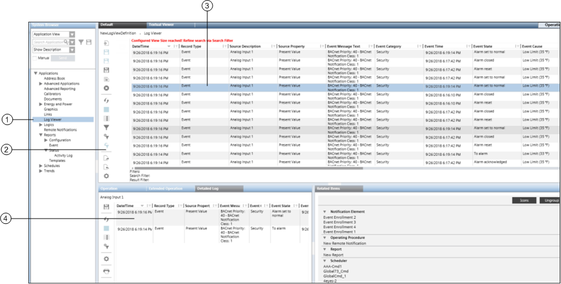

Log Viewer Workspace
The Log Viewer workspace provides information on the user interface elements of the Log Viewer application.

Log Viewer Workspace | ||
| Name | Description |
1 | System Browser | Displays all the saved Log View definitions in Application View > Applications > Log Viewer. |
2 | Contains buttons for performing various actions in Log Viewer. | |
3 | Log View | Displays the combined data from the Activity Log and Event Log. By clicking the drop-down arrow, a menu with the following options displays: |
4 | Displays information related to system activities and events. | |